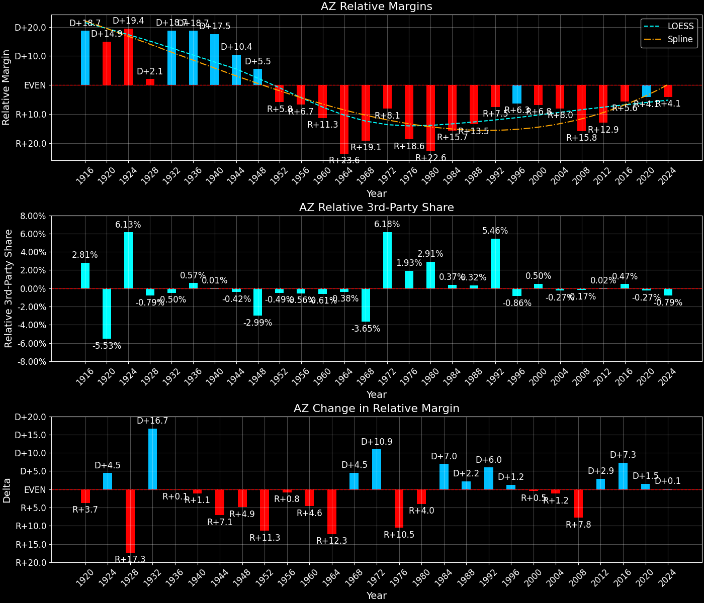
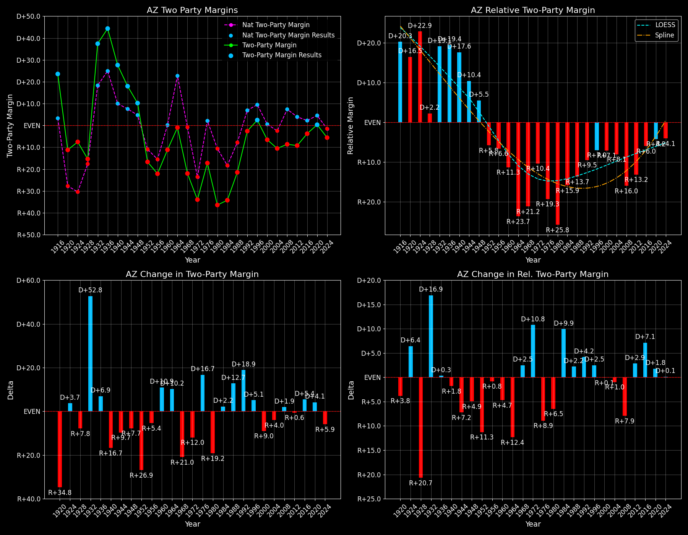

Arizona (AZ) — Statewide

Margins · 3rd-Party share · Pres. deltas

Relative margins · Relative 3rd-Party · Rel. deltas
Arizona (AZ) — Total Data
| Year | D | R | State Margin | Nat. Margin | Rel. Margin | Total votes | EVs |
|---|---|---|---|---|---|---|---|
| 1916 | 33,170(57.2%) | 20,524(35.4%) | D+21.8 | D+3.1 | D+18.7 | 58,021 | 3 |
| 1920 | 29,546(44.4%)(Δ -3,624) | 37,016(55.6%)(Δ 16,492) | R+11.2(Δ R+33.0) | R+26.2(Δ R+29.3) | D+14.9(Δ R+3.7) | 66,562(Δ 8,541) | 3 |
| 1924 | 26,235(35.5%)(Δ -3,311) | 30,516(41.3%)(Δ -6,500) | R+5.8(Δ D+5.4) | R+25.2(Δ D+1.0) | D+19.4(Δ D+4.5) | 73,961(Δ 7,399) | 3 |
| 1928 | 38,537(42.2%)(Δ 12,302) | 52,533(57.6%)(Δ 22,017) | R+15.3(Δ R+9.5) | R+17.4(Δ D+7.8) | D+2.1(Δ R+17.3) | 91,254(Δ 17,293) | 3 |
| 1932 | 79,264(67.0%)(Δ 40,727) | 36,104(30.5%)(Δ -16,429) | D+36.5(Δ D+51.8) | D+17.8(Δ D+35.2) | D+18.7(Δ D+16.7) | 118,251(Δ 26,997) | 3 |
| 1936 | 86,722(69.8%)(Δ 7,458) | 33,433(26.9%)(Δ -2,671) | D+42.9(Δ D+6.4) | D+24.3(Δ D+6.5) | D+18.7(Δ R+0.1) | 124,163(Δ 5,912) | 3 |
| 1940 | 95,267(63.5%)(Δ 8,545) | 54,030(36.0%)(Δ 20,597) | D+27.5(Δ R+15.4) | D+10.0(Δ R+14.3) | D+17.5(Δ R+1.1) | 150,039(Δ 25,876) | 3 |
| 1944 | 80,926(58.8%)(Δ -14,341) | 56,287(40.9%)(Δ 2,257) | D+17.9(Δ R+9.6) | D+7.5(Δ R+2.5) | D+10.4(Δ R+7.1) | 137,634(Δ -12,405) | 4 |
| 1948 | 95,251(53.8%)(Δ 14,325) | 77,597(43.8%)(Δ 21,310) | D+10.0(Δ R+7.9) | D+4.5(Δ R+3.0) | D+5.5(Δ R+4.9) | 177,065(Δ 39,431) | 4 |
| 1952 | 108,528(41.7%)(Δ 13,277) | 152,042(58.3%)(Δ 74,445) | R+16.7(Δ R+26.7) | R+10.9(Δ R+15.3) | R+5.8(Δ R+11.3) | 260,570(Δ 83,505) | 4 |
| 1956 | 112,880(38.9%)(Δ 4,352) | 176,990(61.0%)(Δ 24,948) | R+22.1(Δ R+5.4) | R+15.4(Δ R+4.5) | R+6.7(Δ R+0.8) | 290,173(Δ 29,603) | 4 |
| 1960 | 176,781(44.4%)(Δ 63,901) | 221,241(55.5%)(Δ 44,251) | R+11.2(Δ D+10.9) | D+0.2(Δ D+15.6) | R+11.3(Δ R+4.6) | 398,491(Δ 108,318) | 4 |
| 1964 | 237,753(49.5%)(Δ 60,972) | 242,535(50.4%)(Δ 21,294) | R+1.0(Δ D+10.2) | D+22.6(Δ D+22.4) | R+23.6(Δ R+12.3) | 480,770(Δ 82,279) | 5 |
| 1968 | 170,514(35.0%)(Δ -67,239) | 266,721(54.8%)(Δ 24,186) | R+19.8(Δ R+18.8) | R+0.7(Δ R+23.3) | R+19.1(Δ D+4.5) | 486,936(Δ 6,166) | 5 |
| 1972 | 198,540(30.4%)(Δ 28,026) | 402,812(61.6%)(Δ 136,091) | R+31.3(Δ R+11.5) | R+23.1(Δ R+22.4) | R+8.1(Δ D+10.9) | 653,505(Δ 166,569) | 6 |
| 1976 | 295,602(39.8%)(Δ 97,062) | 418,642(56.4%)(Δ 15,830) | R+16.6(Δ D+14.7) | D+2.1(Δ D+25.2) | R+18.6(Δ R+10.5) | 742,719(Δ 89,214) | 6 |
| 1980 | 246,843(28.2%)(Δ -48,759) | 529,688(60.6%)(Δ 111,046) | R+32.4(Δ R+15.8) | R+9.7(Δ R+11.8) | R+22.6(Δ R+4.0) | 873,945(Δ 131,226) | 6 |
| 1984 | 333,854(32.5%)(Δ 87,011) | 681,416(66.4%)(Δ 151,728) | R+33.9(Δ R+1.5) | R+18.2(Δ R+8.5) | R+15.7(Δ D+7.0) | 1,025,897(Δ 151,952) | 7 |
| 1988 | 454,029(38.7%)(Δ 120,175) | 702,541(60.0%)(Δ 21,125) | R+21.2(Δ D+12.7) | R+7.7(Δ D+10.5) | R+13.5(Δ D+2.2) | 1,171,873(Δ 145,976) | 7 |
| 1992 | 543,050(36.5%)(Δ 89,021) | 572,086(38.5%)(Δ -130,455) | R+2.0(Δ D+19.3) | D+5.6(Δ D+13.3) | R+7.5(Δ D+6.0) | 1,486,975(Δ 315,102) | 8 |
| 1996 | 653,288(46.5%)(Δ 110,238) | 622,073(44.3%)(Δ 49,987) | D+2.2(Δ D+4.2) | D+8.5(Δ D+3.0) | R+6.3(Δ D+1.2) | 1,404,405(Δ -82,570) | 8 |
| 2000 | 685,341(44.7%)(Δ 32,053) | 781,652(51.0%)(Δ 159,579) | R+6.3(Δ R+8.5) | D+0.5(Δ R+8.0) | R+6.8(Δ R+0.5) | 1,532,016(Δ 127,611) | 8 |
| 2004 | 893,524(44.4%)(Δ 208,183) | 1,104,294(54.9%)(Δ 322,642) | R+10.5(Δ R+4.2) | R+2.5(Δ R+3.0) | R+8.0(Δ R+1.2) | 2,012,585(Δ 480,569) | 10 |
| 2008 | 1,034,707(45.1%)(Δ 141,183) | 1,230,111(53.6%)(Δ 125,817) | R+8.5(Δ D+2.0) | D+7.3(Δ D+9.7) | R+15.8(Δ R+7.8) | 2,293,475(Δ 280,890) | 10 |
| 2012 | 1,025,232(44.6%)(Δ -9,475) | 1,233,654(53.7%)(Δ 3,543) | R+9.1(Δ R+0.5) | D+3.9(Δ R+3.4) | R+12.9(Δ D+2.9) | 2,299,254(Δ 5,779) | 11 |
| 2016 | 1,161,167(45.1%)(Δ 135,935) | 1,252,401(48.7%)(Δ 18,747) | R+3.5(Δ D+5.5) | D+2.1(Δ R+1.8) | R+5.6(Δ D+7.3) | 2,573,165(Δ 273,911) | 11 |
| 2020 | 1,672,143(49.4%)(Δ 510,976) | 1,661,686(49.1%)(Δ 409,285) | D+0.3(Δ D+3.9) | D+4.5(Δ D+2.4) | R+4.1(Δ D+1.5) | 3,387,326(Δ 814,161) | 11 |
| 2024 | 1,582,860(46.7%)(Δ -89,283) | 1,770,242(52.2%)(Δ 108,556) | R+5.5(Δ R+5.8) | R+1.5(Δ R+5.9) | R+4.1(Δ D+0.1) | 3,390,161(Δ 2,835) | 11 |
Column explanations
- Δ
- Change (delta) in the value from the previous election year.
- Year
- Election year.
- D
- Number of votes for the Democratic candidate (raw count(pct%)).
- R
- Number of votes for the Republican candidate (raw count(pct%)).
- State Margin
- Margin between the two major-party candidates, including third-party votes ((D - R)/total).
- Nat. Margin
- The national presidential margin for that year, including third-party votes ((D_total - R_total)/total_votes).
- Rel. Margin
- The presidential margin relative to the national presidential margin (Margin - Nat. Margin).
- Total votes
- Total voter turnout or ballots cast (when provided).
- EVs
- Number of electoral votes allocated to this state or unit.
Arizona (AZ) — Third-Party Data
| Year | D | R | Other votes | State 3rd-Party Share | 3rd-Party Nat. Share | 3rd-Party Rel. Share |
|---|---|---|---|---|---|---|
| 1916 | 33,170(57.2%) | 20,524(35.4%) | 4,327(7.5%) | 7.46% | 4.64% | 2.81% |
| 1920 | 29,546(44.4%)(Δ -3,624) | 37,016(55.6%)(Δ 16,492) | 0(0.0%) | 0.00% | 5.53% | -5.53% |
| 1924 | 26,235(35.5%)(Δ -3,311) | 30,516(41.3%)(Δ -6,500) | 17,210(23.3%) | 23.27% | 17.14% | 6.13% |
| 1928 | 38,537(42.2%)(Δ 12,302) | 52,533(57.6%)(Δ 22,017) | 184(0.2%) | 0.20% | 0.99% | -0.79% |
| 1932 | 79,264(67.0%)(Δ 40,727) | 36,104(30.5%)(Δ -16,429) | 2,883(2.4%) | 2.44% | 2.94% | -0.50% |
| 1936 | 86,722(69.8%)(Δ 7,458) | 33,433(26.9%)(Δ -2,671) | 4,008(3.2%) | 3.23% | 2.66% | 0.57% |
| 1940 | 95,267(63.5%)(Δ 8,545) | 54,030(36.0%)(Δ 20,597) | 742(0.5%) | 0.49% | 0.48% | 0.01% |
| 1944 | 80,926(58.8%)(Δ -14,341) | 56,287(40.9%)(Δ 2,257) | 421(0.3%) | 0.31% | 0.72% | -0.42% |
| 1948 | 95,251(53.8%)(Δ 14,325) | 77,597(43.8%)(Δ 21,310) | 4,217(2.4%) | 2.38% | 5.38% | -2.99% |
| 1952 | 108,528(41.7%)(Δ 13,277) | 152,042(58.3%)(Δ 74,445) | 0(0.0%) | 0.00% | 0.49% | -0.49% |
| 1956 | 112,880(38.9%)(Δ 4,352) | 176,990(61.0%)(Δ 24,948) | 303(0.1%) | 0.10% | 0.67% | -0.56% |
| 1960 | 176,781(44.4%)(Δ 63,901) | 221,241(55.5%)(Δ 44,251) | 469(0.1%) | 0.12% | 0.73% | -0.61% |
| 1964 | 237,753(49.5%)(Δ 60,972) | 242,535(50.4%)(Δ 21,294) | 482(0.1%) | 0.10% | 0.48% | -0.38% |
| 1968 | 170,514(35.0%)(Δ -67,239) | 266,721(54.8%)(Δ 24,186) | 49,701(10.2%) | 10.21% | 13.86% | -3.65% |
| 1972 | 198,540(30.4%)(Δ 28,026) | 402,812(61.6%)(Δ 136,091) | 52,153(8.0%) | 7.98% | 1.80% | 6.18% |
| 1976 | 295,602(39.8%)(Δ 97,062) | 418,642(56.4%)(Δ 15,830) | 28,475(3.8%) | 3.83% | 1.90% | 1.93% |
| 1980 | 246,843(28.2%)(Δ -48,759) | 529,688(60.6%)(Δ 111,046) | 97,414(11.1%) | 11.15% | 8.24% | 2.91% |
| 1984 | 333,854(32.5%)(Δ 87,011) | 681,416(66.4%)(Δ 151,728) | 10,627(1.0%) | 1.04% | 0.67% | 0.37% |
| 1988 | 454,029(38.7%)(Δ 120,175) | 702,541(60.0%)(Δ 21,125) | 15,303(1.3%) | 1.31% | 0.98% | 0.32% |
| 1992 | 543,050(36.5%)(Δ 89,021) | 572,086(38.5%)(Δ -130,455) | 371,839(25.0%) | 25.01% | 19.55% | 5.46% |
| 1996 | 653,288(46.5%)(Δ 110,238) | 622,073(44.3%)(Δ 49,987) | 129,044(9.2%) | 9.19% | 10.05% | -0.86% |
| 2000 | 685,341(44.7%)(Δ 32,053) | 781,652(51.0%)(Δ 159,579) | 65,023(4.2%) | 4.24% | 3.75% | 0.50% |
| 2004 | 893,524(44.4%)(Δ 208,183) | 1,104,294(54.9%)(Δ 322,642) | 14,767(0.7%) | 0.73% | 1.00% | -0.27% |
| 2008 | 1,034,707(45.1%)(Δ 141,183) | 1,230,111(53.6%)(Δ 125,817) | 28,657(1.2%) | 1.25% | 1.42% | -0.17% |
| 2012 | 1,025,232(44.6%)(Δ -9,475) | 1,233,654(53.7%)(Δ 3,543) | 40,368(1.8%) | 1.76% | 1.73% | 0.02% |
| 2016 | 1,161,167(45.1%)(Δ 135,935) | 1,252,401(48.7%)(Δ 18,747) | 159,597(6.2%) | 6.20% | 5.73% | 0.47% |
| 2020 | 1,672,143(49.4%)(Δ 510,976) | 1,661,686(49.1%)(Δ 409,285) | 53,497(1.6%) | 1.58% | 1.84% | -0.27% |
| 2024 | 1,582,860(46.7%)(Δ -89,283) | 1,770,242(52.2%)(Δ 108,556) | 37,059(1.1%) | 1.09% | 1.88% | -0.79% |
Column explanations
- Year
- Election year.
- D
- Number of votes for the Democratic candidate (raw count(pct%)).
- R
- Number of votes for the Republican candidate (raw count(pct%)).
- Other votes
- Number of votes for third-party (other) candidates (raw count(pct%)).
- State 3rd-Party Share
- Share of the vote received by third-party (other) candidates.
- 3rd-Party Nat. Share
- The national third-party share for that year (3rd-Party votes / total votes).
- 3rd-Party Rel. Share
- Third-party share relative to the national third-party share (3rd-Party share - Nat. 3rd-Party share).

Two-party margins · relative · deltas
Arizona (AZ) — Two-Party Data
| Year | D | R | 2-Party Margin | 2-Party Nat. Margin | 2-Party Rel. Margin | EVs |
|---|---|---|---|---|---|---|
| 1916 | 33,170(61.8%) | 20,524(38.2%) | D+23.6 | D+3.3 | D+20.3 | 3 |
| 1920 | 29,546(44.4%)(Δ -3,624) | 37,016(55.6%)(Δ 16,492) | R+11.2(Δ R+34.8) | R+27.7(Δ R+31.0) | D+16.5(Δ R+3.8) | 3 |
| 1924 | 26,235(46.2%)(Δ -3,311) | 30,516(53.8%)(Δ -6,500) | R+7.5(Δ D+3.7) | R+30.4(Δ R+2.7) | D+22.9(Δ D+6.4) | 3 |
| 1928 | 38,537(42.3%)(Δ 12,302) | 52,533(57.7%)(Δ 22,017) | R+15.4(Δ R+7.8) | R+17.6(Δ D+12.8) | D+2.2(Δ R+20.7) | 3 |
| 1932 | 79,264(68.7%)(Δ 40,727) | 36,104(31.3%)(Δ -16,429) | D+37.4(Δ D+52.8) | D+18.3(Δ D+35.9) | D+19.1(Δ D+16.9) | 3 |
| 1936 | 86,722(72.2%)(Δ 7,458) | 33,433(27.8%)(Δ -2,671) | D+44.4(Δ D+6.9) | D+24.9(Δ D+6.6) | D+19.4(Δ D+0.3) | 3 |
| 1940 | 95,267(63.8%)(Δ 8,545) | 54,030(36.2%)(Δ 20,597) | D+27.6(Δ R+16.7) | D+10.0(Δ R+14.9) | D+17.6(Δ R+1.8) | 3 |
| 1944 | 80,926(59.0%)(Δ -14,341) | 56,287(41.0%)(Δ 2,257) | D+18.0(Δ R+9.7) | D+7.5(Δ R+2.5) | D+10.4(Δ R+7.2) | 4 |
| 1948 | 95,251(55.1%)(Δ 14,325) | 77,597(44.9%)(Δ 21,310) | D+10.2(Δ R+7.7) | D+4.7(Δ R+2.8) | D+5.5(Δ R+4.9) | 4 |
| 1952 | 108,528(41.7%)(Δ 13,277) | 152,042(58.3%)(Δ 74,445) | R+16.7(Δ R+26.9) | R+10.9(Δ R+15.6) | R+5.8(Δ R+11.3) | 4 |
| 1956 | 112,880(38.9%)(Δ 4,352) | 176,990(61.1%)(Δ 24,948) | R+22.1(Δ R+5.4) | R+15.5(Δ R+4.6) | R+6.6(Δ R+0.8) | 4 |
| 1960 | 176,781(44.4%)(Δ 63,901) | 221,241(55.6%)(Δ 44,251) | R+11.2(Δ D+10.9) | D+0.2(Δ D+15.7) | R+11.3(Δ R+4.7) | 4 |
| 1964 | 237,753(49.5%)(Δ 60,972) | 242,535(50.5%)(Δ 21,294) | R+1.0(Δ D+10.2) | D+22.7(Δ D+22.5) | R+23.7(Δ R+12.4) | 5 |
| 1968 | 170,514(39.0%)(Δ -67,239) | 266,721(61.0%)(Δ 24,186) | R+22.0(Δ R+21.0) | R+0.8(Δ R+23.5) | R+21.2(Δ D+2.5) | 5 |
| 1972 | 198,540(33.0%)(Δ 28,026) | 402,812(67.0%)(Δ 136,091) | R+34.0(Δ R+12.0) | R+23.6(Δ R+22.8) | R+10.4(Δ D+10.8) | 6 |
| 1976 | 295,602(41.4%)(Δ 97,062) | 418,642(58.6%)(Δ 15,830) | R+17.2(Δ D+16.7) | D+2.1(Δ D+25.7) | R+19.3(Δ R+8.9) | 6 |
| 1980 | 246,843(31.8%)(Δ -48,759) | 529,688(68.2%)(Δ 111,046) | R+36.4(Δ R+19.2) | R+10.6(Δ R+12.7) | R+25.8(Δ R+6.5) | 6 |
| 1984 | 333,854(32.9%)(Δ 87,011) | 681,416(67.1%)(Δ 151,728) | R+34.2(Δ D+2.2) | R+18.3(Δ R+7.7) | R+15.9(Δ D+9.9) | 7 |
| 1988 | 454,029(39.3%)(Δ 120,175) | 702,541(60.7%)(Δ 21,125) | R+21.5(Δ D+12.7) | R+7.8(Δ D+10.5) | R+13.7(Δ D+2.2) | 7 |
| 1992 | 543,050(48.7%)(Δ 89,021) | 572,086(51.3%)(Δ -130,455) | R+2.6(Δ D+18.9) | D+6.9(Δ D+14.7) | R+9.5(Δ D+4.2) | 8 |
| 1996 | 653,288(51.2%)(Δ 110,238) | 622,073(48.8%)(Δ 49,987) | D+2.4(Δ D+5.1) | D+9.5(Δ D+2.6) | R+7.0(Δ D+2.5) | 8 |
| 2000 | 685,341(46.7%)(Δ 32,053) | 781,652(53.3%)(Δ 159,579) | R+6.6(Δ R+9.0) | D+0.5(Δ R+8.9) | R+7.1(Δ R+0.1) | 8 |
| 2004 | 893,524(44.7%)(Δ 208,183) | 1,104,294(55.3%)(Δ 322,642) | R+10.6(Δ R+4.0) | R+2.5(Δ R+3.0) | R+8.1(Δ R+1.0) | 10 |
| 2008 | 1,034,707(45.7%)(Δ 141,183) | 1,230,111(54.3%)(Δ 125,817) | R+8.6(Δ D+1.9) | D+7.4(Δ D+9.9) | R+16.0(Δ R+7.9) | 10 |
| 2012 | 1,025,232(45.4%)(Δ -9,475) | 1,233,654(54.6%)(Δ 3,543) | R+9.2(Δ R+0.6) | D+3.9(Δ R+3.4) | R+13.2(Δ D+2.9) | 11 |
| 2016 | 1,161,167(48.1%)(Δ 135,935) | 1,252,401(51.9%)(Δ 18,747) | R+3.8(Δ D+5.4) | D+2.2(Δ R+1.7) | R+6.0(Δ D+7.1) | 11 |
| 2020 | 1,672,143(50.2%)(Δ 510,976) | 1,661,686(49.8%)(Δ 409,285) | D+0.3(Δ D+4.1) | D+4.5(Δ D+2.3) | R+4.2(Δ D+1.8) | 11 |
| 2024 | 1,582,860(47.2%)(Δ -89,283) | 1,770,242(52.8%)(Δ 108,556) | R+5.6(Δ R+5.9) | R+1.5(Δ R+6.0) | R+4.1(Δ D+0.1) | 11 |
Column explanations
- Δ
- Change (delta) in the value from the previous election year.
- Year
- Election year.
- D
- Number of votes for the Democratic candidate (raw count(pct%)).
- R
- Number of votes for the Republican candidate (raw count(pct%)).
- 2-Party Margin
- Margin between the two major-party candidates, ignoring third-party votes ((D - R)/(D + R)).
- 2-Party Nat. Margin
- The national presidential margin for that year, including third-party votes ((D_total - R_total)/total_votes).
- 2-Party Rel. Margin
- The presidential margin relative to the national presidential margin (Margin - Nat. Margin).
- EVs
- Number of electoral votes allocated to this state or unit.